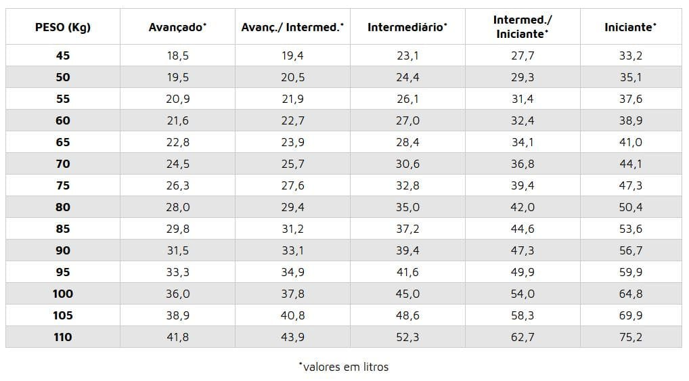
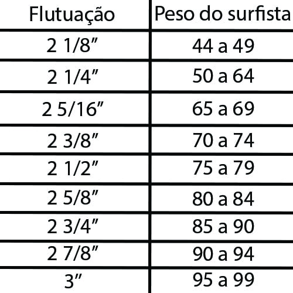

Confira todos os modelos e características de pranchas da Evidence:
Obs.:Clique nos icones de Rabetas, Quilhas e Fundos para ver suas caracteristicas.
Shortboards

Por comparação com as longboards, as shortboards são um tipo de prancha relativamente recente e consideravelmente menor. Com um comprimento entre 5’ e 7’ (sensivelmente entre 1,5m e 2m), as shortboards são um veículo de aprendizagem mais complicado, pois são indicadas para surfistas de conhecimento e prática intermédia e/ou avançada. As shortboards são projetadas sobretudo para um surf de alto desempenho e permitem ao surfista explorar as partes mais críticas da onda. Estas pranchas têm características refinadas e são menores em volume e largura.Entre as suas principais vantagens estão a grande capacidade de manobras, a maior velocidade e a maior versatilidade em face de diferentes condições de mar em virtude da sua forma aerodinâmica e pelo fato de possuírem entre duas a quatro quilhas. Por outro lado, deves levar em conta que a remada será muito mais difícil e que acabarás a sessão muito mais cansado.
Fish

A primeira vista, as pranchas Fish podem parecer um pouco estranhas: mais grossas, mais largas, menores, com um bico largo e uma larga rabeta Swallow. Mas são essas características que tornam as Fishs muito divertidas para ondas pequenas e mais gordas.
Tudo começou nos anos 70 com a revolução das pranchas pequenas que fizeram os surfistas reverem o que era possível de se fazer em uma prancha de Surf. Os longboards foram reduzidos, mas algumas características permaneceram, e foi ai que as Fishs biquilhas apareceram.
As Fishs têm bastante volume, menos do que os longboards (pranchões), mas muito mais do que as pranchinhas. Essa característica deixa a Fish com melhor flutuação e isso significa que a prancha corre mais para fora da água, fazendo com que a remada seja muito mais fácil e mais rápida. Resumindo, com uma fish, o surfista vai entrar em muito mais ondas do que ele entraria com uma pranchinha “comum”.
Porém você pode estar pensando, ok, então se a vantagem da Fish é a remada, por que não surfar com um longboard (pranchão) que tem uma remada ainda melhor? Por serem bem pequenas, as pranchas Fish, apesar do maior volume, possibilitam a realização de manobras rápidas com bastante velocidade.
Uma outra característica marcante das pranchas Fish é a velocidade que ela consegue atingir em ondas pequenas, e isso deve-se principalmente ao Rocker super pouco acentuado das Fishs, ou seja, uma prancha Fish é praticamente reta (flat) no fundo da prancha. A água move-se com mais facilidade no fundo da prancha e isso gera grande parte da velocidade característica de uma Fish. As pranchinhas “normais” já tem muito mais curvatura de fundo, o que ajuda para fazer manobras radicais, mas por outro lado deixa elas mais lentas do que as Fishs.
Mini Tank

A Mini Tank foi desenhada para ser uma prancha divertida nas ondas mais fracas e pequenas, ela tem bastante volume para ajudar na remada, entrando cedo na onda e possibilitando você a pegar mais ondas. Com o outline mais cheio ela permite forçar as bordas e fazer um surf de linha assim garantindo a diversão de quem quer se divertir.
A mini tank é uma prancha que funciona bem em ondas pequenas e fracas ou em ondas mais gordas.
Recomendamos para quem quer surfar sempre e pegar mais ondas.
Funboards

É tida como a melhor opção para os iniciantes. Um pouco menor que a longboard, em torno de 7”, a funboard conserva a estabilidade e ainda possibilita a ação de manobras. Se você pretende começar a encarar as ondas, a funboard é escolha certa para o início.
Longboards

É uma prancha de surf grande e de ponta redonda. Inspirada nos troncos havaianos, são as primeiras pranchas de surf, as que se usaram no início da expansão do surf. A Longboard é ideal para ondas pequenas e médias. Também pode ser usada para ondas grandes, mas apenas se o surfista tiver experiencia. Este tipo de prancha tem movimentos próprios como o Hang Five e o Hang Ten.
Stand-Ups

O Stand Up Paddle tem sua origem vinda das Ilhas Havaianas. No começo da década de 1960, os Beach Boys de Waikiki deram origem ao termo “Beach Boy Surf” quando estavam em suas pranchas compridas remando com remos de canoa, com o objetivo de tirarem fotos para os turistas que aprendiam a surfar. Stand Up Paddle Boarding, ou SUP, é um desporto aquático, uma variante do surf, no qual o praticante em pé numa prancha, usa um remo para se mover através da água. O Stand Up Paddle Boarding, com raízes Polinésias, significa em havaiano Ku (de pé) Hoe (remar) He’e (surfar) Nalu (onda).
A modalidade Wave é uma das mais conhecidas modalidades de Stand-Ups
Wave
A modalidade Stand Up Paddle Wave tem como objetivo unir as habilidades e possibilidades de desempenho do surf clássico e moderno com o uso do remo. Desta forma, pretende-se que as potencialidades e características do equipamento (prancha e remo) sejam usadas em uma onda. Assim, somente surfar a onda sem o auxilio do remo não é o pretendido pelo Stand Up Paddle.
Rabetas

Squash
X
Squash:
É uma rabeta que tem uma maior área e a que tem maior sustentação, boa para ondas menores. Permite também uma quebra de linha, o que torna uma das rabetas mais compatíveis com a linha do surf atual.

Square
X
Square:
Difere da squash pelas suas pontas mais quadradas que ajuda a quebrar a linha. Se assemelhando á Swallow. Boa em ondas buraco, por ter ótima aderência.
Round Squash
X
Round Squash:
Sem dúvidas a rabeta mais clássica entre surfistas de todas as idades. Assim como a squash e a Diamond, é a que melhor representa no surf de ondas pequenas e médias. Boa para todos os tipos de pranchas, sofre adaptações básicas dependendo do tamando da onda desejada.

Round
X
Round:
Um design mesclando round pin e squash, é ideal para ondas pequenas e surfistas que imprimam mais forca no pé de trás.

Pin
X
Pin:
Somente usada em pranchas acima de 7 pés para ondas grandes, buraco e veloz. Tem mais aderência nas viradas e ótima reposta para tubos.
Round Pin
X
Round Pin:
Linha de surf bem redonda, vem sendo usada bastante nas tri-quilha. É melhor em ondas buraco e curtas. Com menor sustentação, não é indicada para ondas cheias.

Diamond
X
Diamond:
Mais usada na época das monoquilhas, foi substituída pela squash, por ter um comportamento semelhante nas ondas.
Half Moon
X
Half Moon:
Uma rabeta que permite um arco mais curto e redondo, em comparação a uma “Swallow” tradicional, beneficiando manobras mais verticais em função do seu formato arredondado.
Bat
X
Bat:
Tem suas pontas mais quebradas, o que a faz perfeita para ondas que quebram verticalmente. Possibilita equilíbrio e mobilidade na parede da onda, mas falha em manobras com muita curva. Dane Reynolds fez com que ela voltasse à cena nos último anos, e só ele sabe o controle necessário para desfrutar com elegância dessa rabeta complicada.
Fish
X
Fish:
Usadas até os dias de hoje, ja foi moda na época da (biquilhas). Essa rabeta perimite maior quebra de linha, sendo mais utilizada de depois da squash. Com uma linha mais arisca, é indicado para quem busca estilo de surf mais quebrado.

Swallow
X
Swallow:
Funciona para qualquer tipo de prancha e é possível realizar manobras mais ágeis. Desenvolvida para quebrar a linha de manobra mais facilmente e retornar a onda com a mesma facilidade, tendo uma resposta rápida.
Copinhos de Quilhas:


FCS Fusion
X
FCS Fusion:
O sistema FCS Fusion é um inovador sistema de plug de surf para instalar antes da laminação. Inicialmente projetado para as pranchas EPS/Epoxy, cada vez mais shapers usam para os blocos de Poliuretano/PU para pranchas de poliéster. Os três plugs estão rodeados de uma espuma de alta densidade para aumentar a resistência e absorver os esforços que geram as quilhas, mantendo um peso mínimo.

FCS 2
X
FCS 2
Foi projetada para funcionar no mais alto nivel. Agora é possível colocar e remover suas quilhas em segundos sem a necessidade de parafusos ou ferramentas. Você vai encontrar nas pranchas com FCS 2 mais velocidade, aceleração mais rápida e o mais importante mais resposta da sua prancha o que equivale a um melhor surf.
Future
X
Future
Muitos entusiastas e a própria empresa argumentam que as quilhas Futures são mais resistentes, porque a quilha fica conectada ao copinho através da base toda, diferente do que acontece com os outros sistemas, e que quando há quebra, normalmente é na base da quilha, e tudo que deve ser feito é trocar a quilha ao invés de ter que arrumar a prancha.

Caixa de quilha central
X
Caixa de quilha central
Criado para encaixe de quilhão central para troca de variados modelos de quilhas, assim podendo ter várias pranchas em uma só.
Flutuação:
Com tecnologia utilizada nos softwares 3D, vimos que temos a capacidade de calcular o volume em litros de cada prancha. O volume em litros, é uma medida baseada na relação entre tamanho, largura e espessura da prancha, ou seja, seria como se enchesse a prancha d'água. Dessa forma, calculamos alguns índices em relação ao peso e nível de surf, e através desse cálculo podemos verificar o volume ideal para cada surfista. Portanto, desenvolvemos uma tabela para oferecer um ponto de referência inicial. Depois de certo tempo, o surfista tende a se acostumar com essa variação de volume, e com aquela medidas de volume que se torna mais adequada às suas necessidades. Importante citar, que a tabela serve apenas como referência inicial, portanto, não indicamos seguir à risca, já que o volume ideal pode variar de acordo com à idade, condições de ondas a serem surfadas, preferência de cada surfista, etc...
Flutuação:
Sabemos que existe uma relação bem grande o entre peso do surfista e a flutuação de uma prancha. Uma prancha errada não oferecerá o desempenho desejado para performance do surf. Deve ser levado o em consideração, a altura do surfista, o tempo de surf, a habilidade e tipo de onda a ser surfada, para adquirir uma prancha com mais ou menos flutuação. Um iniciante deve utilizar uma prancha um pouco maior que sua altura com algumas medidas de meio mais largas e com boa flutuação, para que o progresso seja rápido assim, com o tempo e experiência saberá o que mais se adapta ao seu estilo, podendo diminuir o tamanho de suas pranchas e flutuação, dependendo é claro da praia e o tamanho da onda. A tabela serve apenas como referência inicial, portanto, não indicamos seguir à risca.
Bordas:
50 x 50
X
50 X 50
Borda com uma transição mais intermediária, muito utilizada em longboards e pranchas para iniciantes devido a sua boa flutuação. Sua curvatura mais suave deixa a prancha mais “macia” e boa flutuação garante uma remada mais fácil.
Media
X
Media
Borda mais utilizada em pranchas menores para executar manobras de quebras de linhas na onda. Essa é a borda ideal para ondas menores e para o surf progressivo, equilibrando flutuação e velocidade na troca de borda.
Baixa ou Faca
X
Baixa ou Faca
Com menos volume na borda e com o fundo mais reto, esse tipo de borda penetra mais na onda dando maior velocidade e direcionamento ao surfista. Ideal para ondas tubulares que precisam de velocidade, porém a menor flutuação retira um pouco o poder de remada da prancha.
Fundo:
Concave
X
Concave
Procurado pelos surfistas mais experientes e insanos, que vivem atrás de ondas em alta velocidade. Pode ser aplicado em toda extensão da prancha (full concave), só no meio (concave) ou ainda só na rabeta (tail concave).
Double Concave
X
Double Concave
Ao invés de um, dois pequenos côncavos paralelos, direcionados do meio para a parte de fora da prancha. Pode ser pedido com todos os tipos de fundo, libera a rabeta e a deixa menos direcional.
Flat
X
Flat
Tem o fundo inteiro reto, de ponta a ponta. É considerado o mais normal e o que menos faz diferença na performance da prancha, adaptando-se a qualquer uma. Proporciona equilíbrio lateral, sustentação e boa flutuação.

V-Bottom
X
V-Bottom
Usado por surfistas mais experientes, na tentativa desacelerar ondas fortes e pesadas. Normalmente usado entre as quilhas, auxilia na troca de borda para borda.
Canaletas
X
Canaletas
As canaletas como próprio nome diz, são pequenos canais de linhas retas feitas na rabeta da prancha. Direcionando o fluxo de água e assim deixando a prancha mais rápida, com mais projeção e mais dura.
Out-Line:
O outline é a linha externa representada pela combinação de curvas através dos desenhos feitos pelo shaper. As medidas básicas definem quatro partes do bloco: o bico, meio, ponto mais largo (wide point) e rabeta.

Out-Line mais curvo
Prancha mais solta, só que com menor projeção.